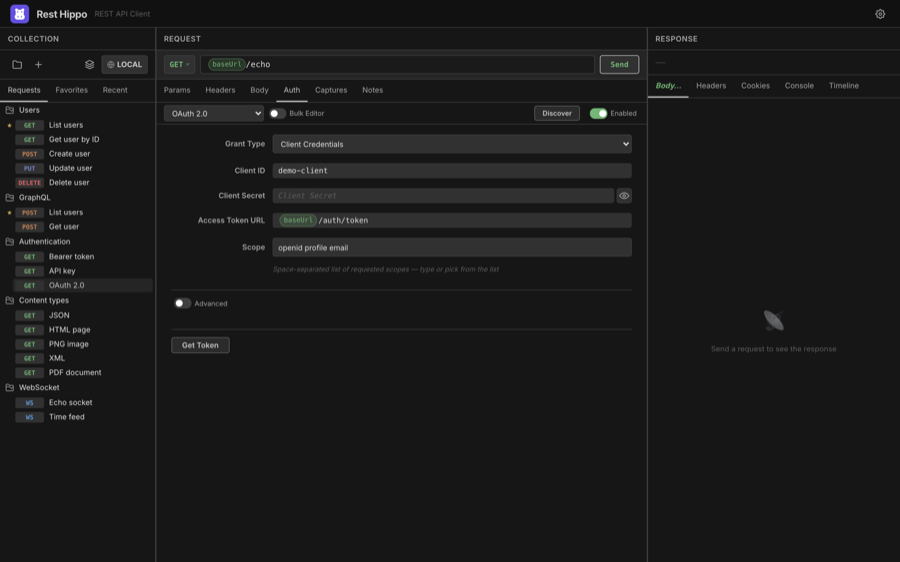

Variables & Environments
Variables let you write a request once and reuse it across hosts, users, and
runs. Anywhere you can type — the URL, params, headers, body, or auth fields —
you can insert a variable with double-brace syntax: {{name}}.
Using variables
Type {{ in any field to open the typeahead, which lists the variables
available in the current scope. Pick one and Rest Hippo inserts it as a highlighted
pill:

At send time, every {{name}} is replaced with its resolved value. With
Show URL preview on, you can see the resolved URL before
you send.
Scopes
A variable can be defined at four levels. When the same name exists in more than one, the most specific scope wins:
Folder ▸ Collection ▸ Environment ▸ Global
(most specific) (most general)
- Global — available everywhere, in every collection.
- Environment — defined in the active environment (see below). Switching environments swaps these values.
- Collection — defined on a collection, shared by every request in it.
- Folder — defined on a folder, scoped to the requests inside it.
So a baseUrl set in your Local environment overrides a global baseUrl,
and a folder-level override beats them both.
Collection variables
Open the Collections manager and use the Variables tab to edit a collection's variables:

Folder variables work the same way — right-click a folder and choose Variables.
Environments
An environment is a named set of variables you can switch between — the
classic use is one environment per deployment (Local, Staging, Production), each
with its own baseUrl, credentials, and IDs.
Click the environment picker in the collections toolbar (it shows the active
environment, e.g. LOCAL) to open a quick-switch menu. It lists Global
followed by every named environment, with a check beside the active one — pick
one to make it active instantly (all {{variables}} resolve against it).
Choose Manage… at the bottom to open the full environments editor:

- Global is always first; its variables are available everywhere.
- Below it are your named environments. Click one to make it active — a
check marks the active environment, and all
{{variables}}resolve against it. - + adds an environment; drag to reorder; double-click to rename; the trash icon deletes.
- The Variables tab on the right edits the selected environment's variables as a key/value grid (or as plain text via Bulk editor). Changes save automatically.
Secure variables
Mark a variable secure (the lock icon) to encrypt it at rest and mask it in the UI. Revealed secrets re-mask themselves automatically after a short time. Use secure variables for tokens and passwords you reference from auth fields.
Captures
Captures close the loop: after a request succeeds, pull a value out of the response and write it into a variable that later requests can use. A login request can capture the returned token; the next request sends it as a Bearer token — no copy-paste.
Configure them on the Captures tab of the request:

Each capture rule has:
| Field | Meaning |
|---|---|
| Source | Where to read from: the Body, a Header, or the Status code |
| Path / Name | For Body, a dot-path like .data.token; for Header, the header name |
| Scope | Where to write: Environment, Collection, or Global |
| Variable | The variable name to write |
| Codes | Which response codes the rule fires on (see below) |
| Secret | Mark the captured value secure (encrypted, masked) |
For the Body source the same dot-path (.data.token, .items.[0].id)
works whether the response is JSON, YAML, or XML — the body is
parsed automatically and the path is walked over it. XML is addressed from its
root element (e.g. <auth><token>…</token></auth> → .auth.token), and
repeated tags become an indexable list (.list.item.[0]). A body that isn't one
of those formats, or a path that finds nothing, is reported as a warning and
captures nothing.
Choosing which response codes a rule fires on
Each rule has its own Codes selector — click it to open a checklist where you
can tick whole status groups (1xx–5xx), choose Any status, or type
specific codes (e.g. 201, 404) that appear as removable chips. A rule
runs only when the response status matches its selector, so a single request can
capture different values into different variables depending on the outcome — for
example capture the access token from a 2xx body into token, but capture the
error message from a 4xx body into lastError.
New rules default to 2xx, so captures keep firing only on success unless you opt a rule into other codes. When a value can't be found (missing field, empty body) the rule is reported as a warning and never overwrites a good value with an empty one.
Rest Hippo shows a small toast confirming what was written (e.g. Captured 1 variable → env.token), and the response status bar shows a captured badge.
Next: GraphQL →